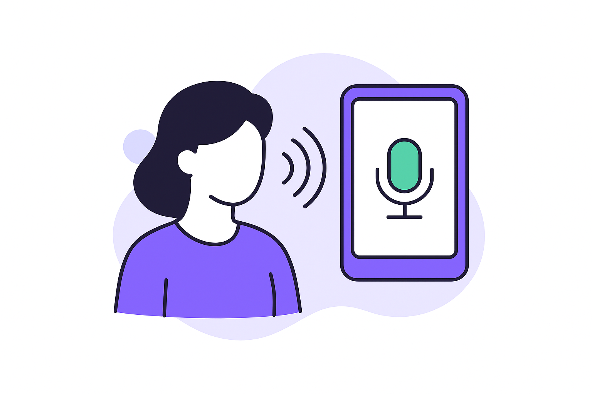

Diabetes Risk Ecosystem
Our AI-driven platform focuses on making early diabetes detectionsimple, accessible, and awareness-driven for everyone.
- Early risk checks performed through voice, PPG, and lifestyle data.
- Early detection reduces risks of heart disease, nerve damage, and kidney failure
- AI models trained on diverse datasets to ensure accuracy across populations
How does D.Check work?
Do a dibetes risk check in 3 steps. Its that simple!
- Speak a short fixed phrase (e.g., “Health is my greatest wealth”) for 6‐10 seconds. Our system analyzes vocal tone and micro-variations to extract health-related acoustic features 
- Place your fingertip gently on your phone,s camera with the flash on for 30 seconds.
We extract heart-rate and pulse-wave features from color intensity changes.

- Answer a few questions on age, height, weight, and lifestyle.
Your responses provide context that improves prediction accuracy.

- Receive an AI-based health-risk score (screening only, not diagnostic) and suggested next actions.
All data are encrypted and processed securely

Your data has only one owner. YOU!
- You can use D.Check anonymously. No personal details are required.
- D.Checkdoes not sell or share your data with any third party

Browse Latest Info regarding Dibetes
Frequently Asked Questions
Q What is this voice and camera‐based screening tool?
This tool helps users record short voice clips and fingertip videos to extract health-related features (like vocal and pulse characteristics).
These features, combined with simple lifestyle and health questions, are used to estimate potential diabetes risk — purely for research and awareness, not diagnosis.
Is this an online medical consultation or a diagnostic test?
No. This is
How do I use the app?
You,ll record:
- A short voice sample (saying a fixed sentence for ~8 seconds)
- A fingertip video (30 seconds using your phone,s rear camera + flash)
- A brief survey (age, weight, lifestyle, etc.) After recording, the app extracts key features automatically and provides a risk score or report.
Is my data safe and secure?
Yes. All data (audio, video, survey answers) is encrypted and stored securely. Only anonymized numerical features are used for modeling. You can request deletion of your data anytime.
Why do I need to say a fixed phrase?
Using the same phrase for all users ensures that extracted voice features (pitch, jitter, shimmer, etc.) are comparable — improving model consistency and reliability.
Can I use this app without sharing my personal details?
Yes, you can use it anonymously. We only require minimal info (e.g., age, sex) to improve accuracy. All identifying details are optional and securely handled.
Is this tool approved by doctors?
This project is based on peer-reviewed research (e.g., PLOS, PMC studies) and follows scientific methods for feature extraction — but it’s not a replacement for medical consultation. Always confirm results with a qualified clinician.
Can I see how my data is used?
Yes. The app displays extracted numerical features (like average pitch, HR, HRV) and shows how they contribute to the estimated risk score. You can also download your anonymized data if you wish.
What if I get a “High Risk” result?
Treat it as a screening flag, not a diagnosis. You should consult a healthcare provider and consider a blood glucose or HbA1c test for confirmation.